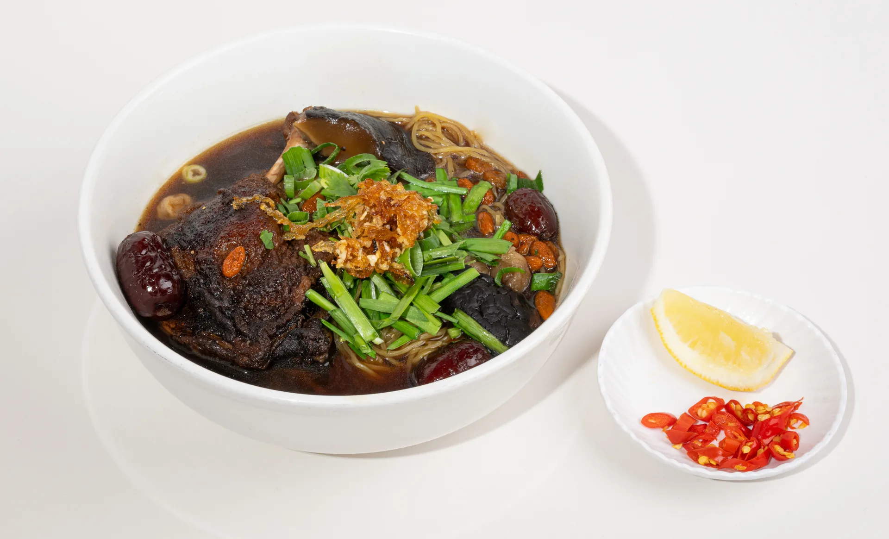

FOOTSCRAY · MELBOURNE
A little taste
of home.
Hao Phong — Vietnamese & Chinese Restaurant
Familiar flavours, generous plates and good food shared around the table. Find us in the heart of Footscray.

FROM OUR KITCHEN 01 / HAO PHONG
THE KITCHEN'S SELECTION
Chef's Specials
From comforting classics to seafood worth sharing. Thirteen dishes, each chosen from our own menu.
A TASTE OF HAO PHONG
From our kitchen.
Real Hao Phong dishes, including additional restaurant photos from the Uber Eats menu.
WORDS FROM OUR GUESTS
Around the table.
Selected summaries of public customer reviews. Each is linked to its original listing; these are not direct quotations.
SEE YOU SOON
Find us in Footscray.
In the heart of Hopkins Street, ready to welcome you for your next meal.
Footscray VIC 3011, Australia
Monday – Tuesday 10:30am – 9:30pm
Wednesday Closed
Thursday – Sunday 10:30am – 9:30pm
Public holiday hours may vary. Please call ahead. Delivery ordering hours may differ.136 HOPKINS STREET FOOTSCRAY, MELBOURNE